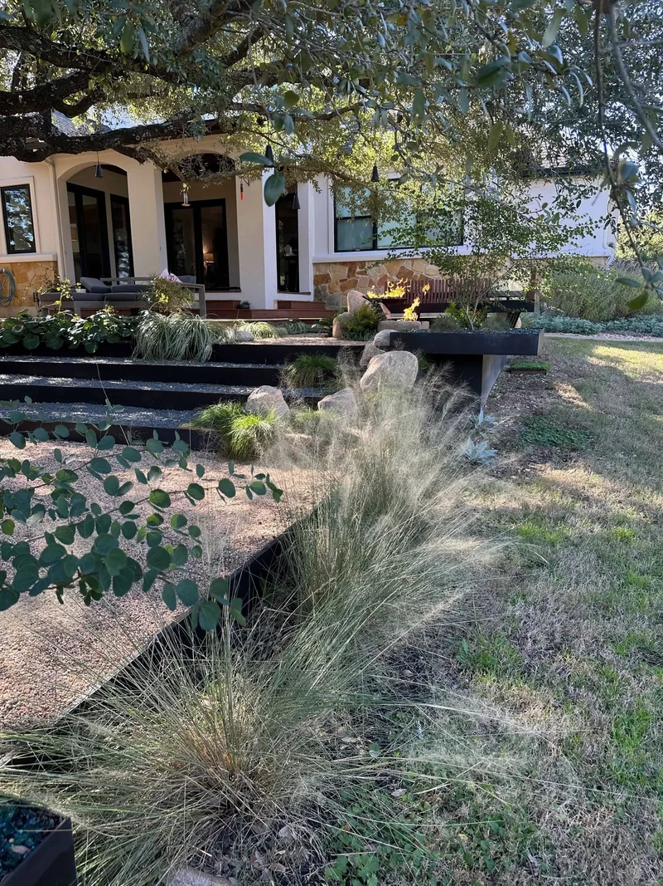

Austin Water pays up to $3,000 to replace healthy lawn with native plant beds, up to $1,500 for rain gardens and other features that hold rainwater, up to $5,000 for rainwater tanks, and up to $1,000 to make an existing irrigation system more efficient. The lawn and rain garden rebates need Austin Water’s pre-approval before anything is bought or built, and the city has been in its Conservation Stage, with automatic irrigation one day a week, since September 2, 2025. Every figure here comes from Austin Water’s own pages as we read them on November 26, 2026.
What Rebates Does Austin Water Pay for a Yard?
Austin Water’s Conservation Hub, where applications are filed, lists ten residential rebates and the rules for each. Its rebates page gives the short list.
| Rebate | What it pays | Main condition |
|---|---|---|
| WaterWise Landscape | $100 per 100 square feet converted, up to $3,000 per property for its lifetime | Pre-approval first. At least 200 square feet of turf grass converted |
| WaterWise Rainscape | $0.50 per square foot, plus $0.50 more where healthy turf grass is removed, up to $1,500 per property for its lifetime | Pre-approval first. At least 100 square feet |
| Rainwater Harvesting | $0.50 per gallon of storage with no pump, $1.00 with a pump, up to $5,000 per service address for its lifetime | Pre-approval first for systems over 500 gallons |
| Landscape Survival Tools | $50 for compost, $40 for hardwood mulch, $30 for core aeration | At least 2 cubic yards each of compost and mulch |
| Irrigation Upgrade | Up to $1,000 per property for its lifetime | An existing system on a single-family property |
| Watering Timer | 50 percent of the price, up to $40, for up to two hose-end timers | One rebate per service address |
| Laundry to Landscape | Up to $300 for materials, plus up to $300 for installation by a licensed irrigator | Gravity-fed systems, outside the Edwards Aquifer Recharge Zone |
| Pool Cover | 50 percent of the price, up to $50 for a manual cover or $200 for a permanent mechanical cover | A new cover, not a replacement |
| Cartridge Pool Filter | Up to $250 | Replaces a sand or D.E. filter |
| Pressure Regulating Valve | Up to $150 | Water pressure of 80 psi or greater, and a plumbing permit |
Each rebate is open to customers of Austin Water or of a qualifying water provider on its list, and the account holder or an authorized representative submits the application. Austin Water says to allow 6 to 8 weeks for payment.
What Does the WaterWise Landscape Rebate Require?
This is the lawn conversion rebate, and its rules open with a note: "You must receive pre-approval from Austin Water before purchasing, installing, or starting any part of this project." Work done before pre-approval is not eligible. The other rules:
- The lawn: half of the existing turf grass area must be healthy turf grass when you apply
- The plants: native and adapted plants from the City’s Grow Green plant guide, reaching at least 50 percent plant coverage at maturity. Turf grass cannot be replaced with another turf grass
- Planting dates: March 1 to May 31, or September 1 to November 30
- Mulch: 2 to 3 inches of organic hardwood mulch on the beds
- Irrigation: the existing system in the area is capped or converted to drip or low-flow bubblers, and no new permanent irrigation system goes into the conversion area
- Not allowed: artificial turf, gravelscapes, and water features
- Gravel: none on a project smaller than 500 square feet. On a larger one, gravel paths up to 3 feet wide and gravel patios up to 200 square feet, with no gravel between the sidewalk and the street

What Do the Rain Garden and Rainwater Tank Rebates Require?
WaterWise Rainscape pays for rain gardens, berms, terraces, swales, and porous pavement that capture rain and keep it on the property. It needs pre-approval and follows the same planting dates. A gravel or rock rainscape may not be wider than 3 feet.
Rainwater Harvesting pays by the gallon of storage. Tanks, tank pads, screens, filters, first-flush systems, and labor are eligible. Gutters and irrigation systems are not.
- 500 gallons or less: buy and install the system, then apply within 90 days of completion
- More than 500 gallons: apply for pre-approval first, with a site drawing and a system drawing
Both checklists point to a second saving, the City’s Stormwater Management Discount on the monthly drainage charge. Grading, swales, and drains are part of our drainage work.
What Does the Irrigation Upgrade Rebate Pay For?
Changes to a system that is already in the ground. New systems and expansions are not eligible, and Austin Water’s rules say the work is done by the homeowner or a licensed irrigator. Two listed items apply when lawn becomes plant beds: capping a station pays $100 per station, and converting a station to drip pays up to $50 per station. Austin Water also runs free irrigation system check-ups for homes that used more than 20,000 gallons in one month.
What Are Austin’s Watering Days Right Now?
Austin Water’s Find Your Watering Day page says: "As of Sept. 2, 2025, Austin is under Conservation Stage Water Use Restrictions." For a home:
| How you water | Days a week | Even addresses | Odd addresses |
|---|---|---|---|
| Automatic and manual irrigation systems | 1 | Thursday | Wednesday |
| Hose-end sprinklers and drip irrigation | 2 | Thursday and Sunday | Wednesday and Saturday |
The hours on those days are midnight to 10 a.m. or 7 p.m. to midnight. A hand-held hose or a refillable container is allowed at any time on any day. Penalties run up to $1,000 per violation.
Stage 1 comes next. Austin Water’s drought response page says it is triggered when storage in the Highland Lakes reaches 1.4 million acre-feet.
Austin Water lists a New Xeriscape Landscape variance, and the City code printed in its Drought Contingency Plan sets the schedule: daily watering for the first 10 days after installation, then twice a week from day 11 through day 40, before 10 a.m. and after 7 p.m. Our guide to Austin’s water restrictions covers what the stages mean for a lawn.
What If Your Water Comes From Another Provider?
Austin Water’s rebates reach customers of 17 qualifying providers on its list, including the Cities of Rollingwood, Sunset Valley, and West Lake Hills. Elsewhere, the Lower Colorado River Authority runs WaterSmart rebates for residents served by its water customers. Its list, dated August 18, 2026, includes Cedar Park, Leander, Pflugerville, Travis County WCID No. 17, and the West Travis County PUA. LCRA’s turf conversion rebate is $0.50 per square foot up to $2,000, with pre-approval. Watering days come from each provider: the West Travis County PUA moved to Stage 1, twice a week, on November 20, 2026.
Can an HOA Block a Low-Water Yard?
Not outright. Section 202.007 of the Texas Property Code says a property owners’ association may not prohibit or restrict an owner from "using drought-resistant landscaping or water-conserving natural turf." The association can require a plan for review, it can regulate gravel, rocks, and cacti, and it cannot unreasonably deny the plan.
Austin Water adds a caution: "HOA requirements that conflict with program requirements may affect rebate eligibility." We wrote approval guides for Circle C, Steiner Ranch, and Mueller.
How Does a Rebate Fit Into a Design-Build Project?
It sets the order of the work. For the lawn rebate, Austin Water’s checklist runs:
- 1. Plan: a site plan with the property lines, buildings, existing plants, and the conversion area with its square footage, and a planting plan with the plant types, their mature spread, and their locations
- 2. Apply: the account holder files for pre-approval on the Conservation Hub, with photos of the whole area before any work
- 3. Wait: for the pre-approval, and for a pre-inspection if Austin Water asks for one
- 4. Build: buy the materials, convert the lawn, and plant inside the planting dates
- 5. Close out: photos of the finished project and itemized, dated, paid-in-full receipts
The plan is our part. The owner of Red Agave draws every plan after a free on-site consultation, and the CAD plan is included. Austin Water says its drawings "do not need to be to scale." A Red Agave landscape design includes a fully dimensioned CAD plan, a plant palette, and material selections.
Tell us at the consultation that you want the rebate. The rules above set the plant coverage, the gravel, the mulch, and the planting dates, and nothing is bought or built until the pre-approval arrives. See our xeriscape service and, for pricing, our xeriscaping cost guide. Questions about a rule go to Austin Water at watercon@austintexas.gov or 512-974-2199, option 4.
What Sources Did We Use?
We read each of these on November 26, 2026. Austin Water changes its amounts and rules, so check the current page before you apply.
- Austin Water: Rebates, Tools & Programs, the Conservation Hub’s residential rebate guidelines, Find Your Watering Day, Austin Water Drought Response, Irrigation System Check-Ups, and the 2024 Drought Contingency Plan
- City of Austin Watershed Protection: Stormwater Management Discount and the Grow Green plant guide
- Lower Colorado River Authority, WaterSmart residential rebates, and the West Travis County PUA Stage 1 notice
- Texas Property Code, Section 202.007
One older City page shows other amounts. Watershed Protection’s Rebates, Free Stuff & Grants page lists the lawn rebate at up to $1,750 and the Rainscape rebate at up to $500, and it sends readers to Austin Water’s page "for current information." We used the Conservation Hub and the rebates page.
Austin Water Rebates
How much does Austin Water pay to replace a lawn?
The WaterWise Landscape rebate pays $100 per 100 square feet converted, up to $3,000 per property for its lifetime. The minimum is 200 square feet, and Austin Water must pre-approve the project before anything is bought or installed.
Does gravel or artificial turf qualify for the Austin Water lawn rebate?
No. The WaterWise Landscape rules say no artificial turf, no gravelscapes, and no water features. A project of 500 square feet or more may include gravel paths up to 3 feet wide and gravel patios up to 200 square feet.
Can I start work before Austin Water approves the rebate?
Not for WaterWise Landscape or WaterWise Rainscape, and not for a rainwater system over 500 gallons. Austin Water says work completed before pre-approval is not eligible for a rebate.
What water restriction stage is Austin in?
The Conservation Stage, in effect since September 2, 2025. A home with an automatic or manual irrigation system waters one day a week: Thursday for even addresses and Wednesday for odd. Hose-end sprinklers and drip irrigation get two days.
Does Austin Water pay for a new sprinkler system?
No. New irrigation systems and expansions of existing systems are not eligible. The Irrigation Upgrade rebate, up to $1,000 per property, is for improving an existing system.